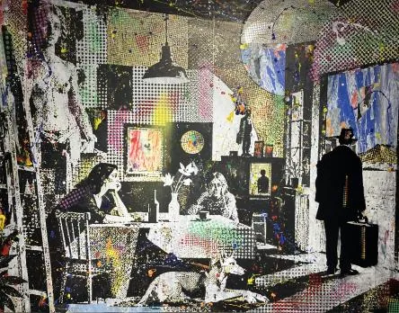

da gio 19 nov a mar 8 dic
NELLO PETRUCCI
A Venezia, il viaggio artistico di Nello Petrucci esplora
 Indicazioni
Indicazioni
- Costi e prenotazioni
- Costo non indicato · Prenotazione non indicata
- Programma
- Programma da verificare. Apri la fonte ufficiale per orari e possibili aggiornamenti.
- In caso di maltempo
- Nessuna indicazione specifica pubblicata.
- Note
- Acquisito automaticamente dalla fonte.
L’EVENTO
Descrizione completa
Walking Through the Cracks
19 novembre – 8 dicembre 2026
Palazzo Pisani Revedin, San Marco 4013/A, Venezia
Giovedì 19 novembre 2026, ore 18.00
Dalla Pompei antica alla street art contemporanea.
A Venezia, il viaggio artistico di Nello Petrucci esplora
le fratture dell’identità e della memoria, tra fotografia, pittura, collage,
Dal 19 novembre all’8 dicembre 2026, Palazzo Pisani Revedin, a Venezia, ospita
), progetto espositivo di
. Il progetto nasce da una
inteso non soltanto come attraversamento di luoghi e culture, ma come esperienza di conoscenza e trasformazione interiore. L’incontro con l’altro diventa occasione per interrogare la memoria, la percezione e la complessità dell’identità umana, in un percorso nel quale l’
si intreccia continuamente con la
Il percorso espositivo riunisce quarantaquattro opere: quattordici
realizzate dall’artista nel corso dei suoi viaggi in diverse parti del mondo, tredici
dedicate ai temi della spiritualità e della coscienza, quattordici
sviluppate attraverso collage, pittura e interventi materici, un’
realizzata con legno e carta e un
prodotto appositamente per la mostra. Tra le opere presentate, particolare rilievo assume un grande e inedito
nel quale compaiono alcuni tra i più celebri protagonisti della cultura urbana, del graffiti writing e della Street Art contemporanea: Banksy, Jean-Michel Basquiat, Keith Haring, JR, Shepard Fairey, Vhils, Space Invader, Ron English, Clet Abraham e lo stesso Petrucci.
Fotografia, stampa, pittura, collage, video e installazione non costituiscono ambiti espressivi separati, ma differenti declinazioni di una medesima ricerca sulla costruzione, la frammentazione e la ricomposizione dell’immagine. Le opere non seguono un ordine cronologico né geografico: la loro disposizione risponde a una logica emotiva e concettuale, nella quale ciascun linguaggio offre una diversa possibilità di avvicinamento alla stessa dimensione esistenziale.
La sezione fotografica, in particolare, si allontana da qualsiasi finalità documentaria per restituire frammenti di esperienza e sospensioni temporali. Ogni immagine trattiene la memoria di un incontro, di un luogo o di un istante, raccontando non soltanto ciò che l’artista ha osservato, ma anche la trasformazione del suo sguardo. La fotografia diventa così una forma di sedimentazione dell’esperienza, una traccia attraverso cui il tempo vissuto continua a interrogare il presente.
Nel corso degli anni, Petrucci ha attraversato città, deserti, villaggi africani, musei, metropolitane, periferie e architetture sospese tra passato e presente. Ha incontrato volti, osservato gesti, raccolto immagini e lasciato tracce del proprio passaggio su superfici già segnate dal tempo. Da questi attraversamenti non emerge una geografia dei luoghi, né una loro restituzione documentaria, ma una
, costruita attraverso le trasformazioni che ogni incontro produce nella percezione della realtà. Il viaggio assume così una dimensione che supera quella geografica per diventare un processo di conoscenza reciproca. Attraversare il mondo significa esporsi alla sua alterità, lasciarsi modificare da ciò che si incontra e riconoscere, nell’esperienza dell’altro, frammenti della propria identità. «
Solo con il tempo ho capito che nessuno di quei viaggi parlava davvero dei luoghi che attraversavo. Parlavano del modo in cui quei luoghi stavano cambiando il mio sguardo. Questa mostra nasce da quella consapevolezza e dal desiderio di condividere un percorso, fatto anche di momenti in cui ho imparato che le cose più importanti difficilmente fanno rumore
Al centro del progetto si colloca la
, che supera la propria evidenza materiale per diventare il principio concettuale e simbolico dell’intera ricerca. Non una semplice frattura o una ferita impressa sulla superficie delle cose, ma una discontinuità capace di rivelare ciò che l’apparente integrità tende a nascondere. Un’apertura attraverso la qualeimmaginare nuove possibilità di trasformazione. Nelle architetture abbandonate, negli ambienti svuotati della loro originaria funzione, nei muri scrostati e nelle tracce che resistono al tempo e alle vicende storiche e sociali, Petrucci riconosce una corrispondenza con la condizione umana. Le trasformazioni dei luoghi diventano specchio delle vicende degli individui che li abitano o li hanno abitati, restituendo una riflessione sulla memoria e sulle incertezze dell’esistenza. La
diventa così una forma di conoscenza: interrompe la continuità, mette in discussione la stabilità delle forme e apre una prospettiva dalla quale osservare la realtà in modo diverso. Attraverso questa immagine simbolica, l’artista esplora la condizione dell’individuo, costantemente sospeso tra appartenenza e distanza, memoria e desiderio di futuro, bisogno di radicamento e impulso a partire. L’incompletezza non coincide necessariamente con l’assenza di significato, così come il deterioramento non esaurisce la capacità delle cose di generare nuove possibilità. È nelle discontinuità che affiorano le stratificazioni del tempo, le memorie individuali e collettive, le tensioni che attraversano l’esistenza. Ogni luogo diventa occasione di ascolto e ogni incontro apre una prospettiva dalla quale riconoscere qualcosa di sé nell’esperienza dell’altro. Come sottolinea la curatrice
Camminando tra le crepe è un invito a considerare il viaggio come un’esperienza che supera il semplice attraversamento geografico per diventare un percorso di conoscenza e trasformazione dello sguardo. Nella ricerca di Nello Petrucci, la crepa non rappresenta soltanto una discontinuità, ma una soglia attraverso cui osservare la realtà da una prospettiva inedita. È nello spazio che si apre tra ciò che conosciamo e ciò che ancora ci sfugge che prende forma la possibilità di una nuova consapevolezza. Le opere accompagnano il visitatore in un percorso di osservazione e ascolto, restituendo all’immagine il tempo necessario per essere attraversata, interrogata e compresa
Un ruolo centrale nella ricerca visiva di Petrucci è affidato alla tecnica dell’
, attraverso la quale la figura viene scomposta in una moltitudine di punti. Osservati da vicino, questi elementi sembrano dissolvere la riconoscibilità del soggetto; soltanto attraverso una presa di distanza è possibile ricomporre una visione d’insieme. Il procedimento non costituisce una semplice scelta tecnica o formale, ma introduce una riflessione sulla natura stessa della percezione. L’immagine si presenta come una struttura complessa, non immediatamente accessibile, la cui comprensione dipende dalla posizione dello spettatore e dalla distanza dello sguardo. La
diventa cosìmetafora della conoscenza: troppo vicini alle cose rischiamo di perderne la configurazione complessiva; soltanto allontanandoci possiamo riconoscere relazioni e significati che il dettaglio isolato non lascia emergere. Una riflessione particolarmente attuale in una contemporaneità caratterizzata dalla sovrabbondanza di immagini, dalla simultaneità delle informazioni e dalla continua accelerazione dell’esperienza. Viviamo in un tempo che sollecita incessantemente il nostro sguardo, ma raramente concede lo spazio necessario alla sedimentazione dell’esperienza e all’elaborazione critica. La successione continua di immagini e stimoli visivi rischia infatti di trasformare l’osservazione in un atto immediato e superficiale, sottraendo tempo alla riflessione e alla costruzione di una consapevolezza più profonda.
Tra le opere in mostra, un’attenzione particolare è riservata al
, presentato per la prima volta in occasione dell’esposizione veneziana. Un progetto inedito che segna un triplice primato: è il primo presepe urbano dedicato a Pompei, il primo a vedere come protagonisti anche gli street artist contemporanei ed è, al tempo stesso, il primo presepe realizzato da Nello Petrucci. L’opera mette in relazione due epoche e una medesima umanità: la
antica e quella contemporanea nella quale l’artista vive e lavora. La composizione si sviluppa su due livelli narrativi. Nella parte inferiore trovano spazio le figure dei protagonisti della Street Art; nella parte superiore, all’interno di una minuziosa riproduzione del
di Pompei, trova posto la
, raffigurata secondo la sua iconografia tradizionale, intima e raccolta, quasi sospesa al di sopra del movimento che anima la città. Lo sguardo dell’artista e quello del visitatore incontrano così due mondi apparentemente distanti, passando dai muri della modernità alle architetture antiche. Per Petrucci, che ha fatto della strada uno spazio di espressione e incontro anche attraverso il graffiti writing e la Street Art,
il presepe diventa un luogo di dialogo tra tradizione e contemporaneità
. Gli street artist entrano nella rappresentazione non come semplici presenze decorative, ma come interpreti del nostro tempo: contribuiscono a trasformare lo spazio urbano attraverso le proprie opere, portando con sé linguaggi, domande e contraddizioni della società contemporanea. Il loro coinvolgimento restituisce alla tradizione presepiale una prospettiva inedita, nella quale la cultura urbana diventa parte integrante di una narrazione universale. La scelta di dedicare il presepe a Pompei assume un significato particolare. La città, con la sua straordinaria stratificazione storica, dove culture e religioni si sono incontrate e sedimentate nel corso dei secoli, è il luogo ideale per accogliere un’opera che mette in relazione epoche, linguaggi e sensibilità differenti. Architettura antica, iconografia cristiana e arte urbana si incontrano così in un’opera che mette in relazione differenti forme espressive, sapienti tecniche artigianali e sensibilità artistiche. La mostra di Petrucci si innesta nel periodo che precede il Natale e il tema della nascita assume una particolare intensità simbolica: non solo evento fondativo della tradizione cristiana, ma anche espressione universale di speranza, rinnovamento e possibilità di ricominciare.
non individua un punto di arrivo, né propone una ricomposizione definitiva delle fratture che attraversano l’esistenza. La
non viene cancellata, ma attraversata, osservata e riconosciuta come parte integrante della realtà e dell’esperienza umana. È proprio in questa apertura che prende forma la possibilità di guardare nuovamente il mondo e di ripensare il proprio rapporto con esso. Perché il viaggio non consiste soltanto nel raggiungere luoghi lontani, ma nel lasciarsi trasformare da ciò che si incontra: scoprire che, talvolta, è proprio attraverso le fratture che si apre uno spazio nuovo per comprendere sé stessi e gli altri.
IL PROGRAMMA
Programma e orari
Appuntamenti raccolti dalle fonti elencate. Dove manca un orario, non è ancora disponibile in questa scheda.
Programma pubblicato
- Dal 2026-11-19 al 2026-12-08
INFORMAZIONI UTILI
Prima di partire
- Controllare la fonte prima di partire.
ORGANIZZAZIONE